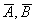
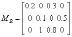
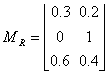
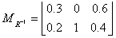
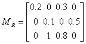
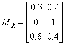
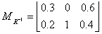

퍼지집합 연산(FUZZY-SET ARITHMATIC)
포함관계
두 퍼지집합 A, B의 소속도를 각각 μA(x), μB(x)라 할 때,
A, B에 속하는 모든 원소 x에 대하여 항상 μA(x) ≤ μB(x)일 때,
A는 B의 부분집합이라 하고 A⊆B로 나타낸다.
상등
두 퍼지집합 A, B에서 모든 x에 대하여 항상 μA(x) = μB(x)일 때,
두 집합은 같다고 하고 A = B로 나타낸다.
전체집합과 공집합
퍼지집합에서도 크리스프집합과 마찬가지로 전체집합을 정의할 수 있다.
우리가 논의의 대상이 되는 모든 원소(소속원)들의 모임으로 그 소속도가 모두 1인 퍼지집합을 전체집합이라 하고 X로 나타낸다.
또 모든 소속원의 소속도가 0인 퍼지집합을 공집합이라하고 Φ로 나타낸다.
여집합
소속도를 Φ가지는 퍼지집합 A의 모든 소속원 x에 대하여 Φ를 소속도로 가지는 퍼지집합을 A의 여집합이라하고
Â로 나타낸다. 따라서μÄ(x) = μA(x)
합집합
두 퍼지집합 A, B에서 전체집합 X에 속하는 모든 원소 x에 대하여 μA(x), μB(x)중 큰 값을 소속도로 가지는
퍼지집합을 만들 수 있을 때, 이 집합을 A, B의 합집합이라 하고 A∪B로 나타낸다. 따라서 A∪B의 소속도는
μA∪B(x) = max(μA(x), μB(x)) 이다
교집합
두 퍼지집합 A, B에서 전체집합 X에 속하는 모든 원소 x에 대하여 μA(x), μB(x)중 작은 값을 소속도로 가지는
퍼지집합을 만들 수 있을 때, 이 집합을 A, B의 교집합이라 하고 A∩B로 나타낸다. 따라서 퍼지집합 A∩B
의 소속도는 μA∩B(x) = min(μA(x), μB(x)) 이다
[예 2-1] 다음 두 퍼지집합에 대하여 다음을 각각 구하여라.
A = 0.2/a + 0.4/b + 1/c + 0.7/d + 0.3/e + 0.1/f
B= 0.2/a + 0.3/b + 1/c + 0.5/d + 0.2/e
(1) (2) A, B의 포함관계 (3) A∪B (4) A∩B
<해>
(1)μÄ(x) = μA(x) 이므로
Â= 0.8/a + 0.6/b + 0/c + 0.3/d + 0.7/e + 0.9/f
 = 0.8/a + 0.7/b + 0/c + 0.5/d + 0.8/e
(2) 전체집합 X에 속하는 원소 a, b, c, d, e, f의 각 소속도를 비교하면,
모든 x∈X에 대하여 μA(x) ≤ μB(x)이므로 B⊆A이다.
(3) μA∪B(x) = max(μA(x), μB(x)) 에서
A∪B = 0.2/a + 0.4/b + 1/c + 0.7/d + 0.3/e + 0.1/f
(4) μA∩B(x) = min(μA(x), μB(x))에서
A∩B = 0.2/a + 0.3/b + 1/c + 0.5/d + 0.2/e
퍼지집합에 대한 여집합과 합집합 및 교집합을 위와 같이 정의하면
크리스프집합에서 성립되는 모든 법칙, 예를 들면, 다음 법칙이 그대로 성립된다.
교환법칙 A∪B = μB∪A, A∩B = B∩A
결합법칙 A∪(B∪C) = (A∪B)∪C, A∩(B∩C) = (A∩B)∩C
분배법칙 A∪(B∩C) = (A∪B)∩(A∪C), A∩(B∪C) = (A∩B)∪(A∩C)
그러나 크리스프집합에서의 모순법칙인
A ∩ Â = Φ와 배타법칙인 A ∪ Â = U의 성질은 퍼지집합에서는 만족하지 않는다.
즉 A ∩ Â ≠ Φ, A ∪ Â ≠ X
퍼지관계:
두 크리스프집합 A, B에 대하여, 그의 카테이션곱 A×B = {(a,b)|a∈A, b∈B}
각 원소에 0과 1사이에 실수인 소속도 μR(a,b)가 대응될 때,
집합 A×B를 A, B의 퍼지관계(fuzzy relation)라 하고 R(A,B)로 나타낸다.
퍼지관계는 행렬 또는 유향레이블그래프로 나타낼 수 있다.
행렬의 경우는 각 원소는 순서쌍의 소속도를 나타내고 유향레이블그래프일 경우는 모서리에 붙인 레이블이 소속도를 나타낸다.
[예 3-1] 다음은 집합 {a, b, c}와 집합 {1, 2, 3, 4}의 퍼지관계 R를 나타낸 것이다.
R = 0.2/(a, 1) + 0.3/(a, 3) + 0.1/(b, 2) + 0.5/(b, 4) + 1/(c. 2) + 0.8/(c, 3)
이것을 소속도행렬과 유향그래프로 나타내면 다음과 같다.

역관계:
퍼지관계 R(X, Y)에 대하여 그의 역관계 R-1(X,Y)는 모든 (x,y)∈X×Y에 대하여
μR-1(y,x)=μR(x,y)로 정의된다.
따라서 역관계의 소속도행렬 MR-1=R은 의 전치행렬이다.
또 역관계의 역관계는 자기자신과 같다. 즉 (R-1)-1 = R
[예 3-2] 집합 X = {x, y, z}와 Y = {a, b}상에서 관계 R(X, Y)의 소속도행렬 MR과 역관계
R-1(X,Y)의 소속도행렬 MR-1은 다음과 같이 서로 전치행렬이다.
, 
관계의 합성:
소속도가 각각 μP(x,y),μQ(y,z)인 관계 P(X, Y)와 Q(Y, Z)의 합성 P(X, Y)○Q(Y, Z)의
소속도를 μPoQ(x,z)=max min[μP(x,y),μQ(y,z)]로 정의하고
이 합성을 max-min 합성(max-min composition)이라 한다.
[예 3-3] 다음과 같이 관계 P(X, Y)와 Q(Y, Z)가 화살표 그림으로 나타내어 있다.
두 관계 P, Q의 max-min합성 R(X, Z) = P(X, Y)○Q(Y, Z)의 소속도를 구하면,
μR(1, 가) = max{min (0.7, 0.6)} = 0.6
μR(1, 나) = max{min(0.7, 0.8), min(0.5, 1)} = 0.7
μR(2, 가) = max{min(1, 0.6)} = 0.6
μR(2, 나) = max{min(1, 0.8)} = 0.8
μR(3, 가) = 0 ,
μR(3, 나) = 1,
μR(4, 가) = 0,
μR(4, 나) = 0.3
관계의 성질:
크리스프 집합 X상에서 정의된 퍼지관계 R(X, X)에 대하여 반사관계(reflexive relation)를 다음과 같이 정의한다.
모든 x∈X에 대하여 μR(x,x)=1이면, R은 반사적이다.
어떤 x∈X에 대하여 μR(x,x)=1이 성립되지않으면, R은 비반사적이다.
모든 x∈X에 대하여 μR(x,x)=1이 성립되지않으면, R은 반반사적이다.
대칭관계(symmetric relation)를 다음과 같이 정의한다.
모든 x,y∈X에 대하여 μR(x,y)=μR(y,x)이면, R은 대칭적이다.
어떤 x,y∈X에 대하여 위의 등식이 성립하지 않으면, R은 비대칭적이다.
모든 x,y∈X에 대하여 위의 등식이 성립하지 않으면, R은 반대칭적이다.
추이관계(transitive relation)를 다음과 같이 정의한다.
모든 순서쌍에 (x,z)∈X2대하여 다음이 성립하면, R은 추이적이다.
μR(x,z)≥maxy min[μR(x,y),μR(y,z)]
어떤 순서쌍에 (x,z)∈X2대하여 위의 부등식이 성립되지 않으면, R은 비추이적이다.
모든 순서쌍에 (x,z)∈X2대하여, 다음이 성립하면 R은 반추이적이다.
[예 3-4] 집합 X = {a, b, c, d}상에서 정의된 관계
R1 = 1/(a, a) + 0,2/(a, b) + 1/(b, b) + 1/(c, c) + 0.2/(b, a) + 1/(d, d)에서
X의 모든 원소 x에 대하여 μR(x,y)=μR(y,z)이므로 반사적이다.
R2 = 0.4/(a, b) + 0.5/(b, c) + 1/(c, c) + 0.5/(c, b) + 0.4/(b, a)에서 (a, b)와 (b, a), (b, c)와 (c, b)의
소속도가 같고 나머지도 모두 0으로 같으므로 대칭적이다.
R3 = 0.3/(a, b) + 0.4/(b, c) + 0.5/(a, c) + 0.6/(c, d) + 0.7/(b, d) + 1/(a, d) 에서
(a, b), (b, c) (a, c)이고 max min[0.3, 0.4] < 0.5 (b, c), (c, d) (b, d)이고
max min[0.4, 0.6] < 0.7 (a, b), (b, d) (a, d)이고
max min[0.3, 0.7] < 1 이므로 추이적이다.
또, R1은 반사적이고 대칭적이고 (a, b), (b, a) (a, a), (b, a), (a, b) (b, b)가 존재하고
추이성의 성질도 만족하므로 추이적이다.
크리스프 집합에서 반사적이고 대칭적이며 추이적인 관계를 동등관계라고 하였다.
그러나 퍼지관계에서는 대칭적이고 대칭적이며 추이적인 관계를 유사관계(similarity relation)라 한다.
이를테면, 위의 [예 3-4]에서 퍼지관계 R1은 유사관계이다.
= 0.8/a + 0.7/b + 0/c + 0.5/d + 0.8/e
(2) 전체집합 X에 속하는 원소 a, b, c, d, e, f의 각 소속도를 비교하면,
모든 x∈X에 대하여 μA(x) ≤ μB(x)이므로 B⊆A이다.
(3) μA∪B(x) = max(μA(x), μB(x)) 에서
A∪B = 0.2/a + 0.4/b + 1/c + 0.7/d + 0.3/e + 0.1/f
(4) μA∩B(x) = min(μA(x), μB(x))에서
A∩B = 0.2/a + 0.3/b + 1/c + 0.5/d + 0.2/e
퍼지집합에 대한 여집합과 합집합 및 교집합을 위와 같이 정의하면
크리스프집합에서 성립되는 모든 법칙, 예를 들면, 다음 법칙이 그대로 성립된다.
교환법칙 A∪B = μB∪A, A∩B = B∩A
결합법칙 A∪(B∪C) = (A∪B)∪C, A∩(B∩C) = (A∩B)∩C
분배법칙 A∪(B∩C) = (A∪B)∩(A∪C), A∩(B∪C) = (A∩B)∪(A∩C)
그러나 크리스프집합에서의 모순법칙인
A ∩ Â = Φ와 배타법칙인 A ∪ Â = U의 성질은 퍼지집합에서는 만족하지 않는다.
즉 A ∩ Â ≠ Φ, A ∪ Â ≠ X
퍼지관계:
두 크리스프집합 A, B에 대하여, 그의 카테이션곱 A×B = {(a,b)|a∈A, b∈B}
각 원소에 0과 1사이에 실수인 소속도 μR(a,b)가 대응될 때,
집합 A×B를 A, B의 퍼지관계(fuzzy relation)라 하고 R(A,B)로 나타낸다.
퍼지관계는 행렬 또는 유향레이블그래프로 나타낼 수 있다.
행렬의 경우는 각 원소는 순서쌍의 소속도를 나타내고 유향레이블그래프일 경우는 모서리에 붙인 레이블이 소속도를 나타낸다.
[예 3-1] 다음은 집합 {a, b, c}와 집합 {1, 2, 3, 4}의 퍼지관계 R를 나타낸 것이다.
R = 0.2/(a, 1) + 0.3/(a, 3) + 0.1/(b, 2) + 0.5/(b, 4) + 1/(c. 2) + 0.8/(c, 3)
이것을 소속도행렬과 유향그래프로 나타내면 다음과 같다.

역관계:
퍼지관계 R(X, Y)에 대하여 그의 역관계 R-1(X,Y)는 모든 (x,y)∈X×Y에 대하여
μR-1(y,x)=μR(x,y)로 정의된다.
따라서 역관계의 소속도행렬 MR-1=R은 의 전치행렬이다.
또 역관계의 역관계는 자기자신과 같다. 즉 (R-1)-1 = R
[예 3-2] 집합 X = {x, y, z}와 Y = {a, b}상에서 관계 R(X, Y)의 소속도행렬 MR과 역관계
R-1(X,Y)의 소속도행렬 MR-1은 다음과 같이 서로 전치행렬이다.
, 
관계의 합성:
소속도가 각각 μP(x,y),μQ(y,z)인 관계 P(X, Y)와 Q(Y, Z)의 합성 P(X, Y)○Q(Y, Z)의
소속도를 μPoQ(x,z)=max min[μP(x,y),μQ(y,z)]로 정의하고
이 합성을 max-min 합성(max-min composition)이라 한다.
[예 3-3] 다음과 같이 관계 P(X, Y)와 Q(Y, Z)가 화살표 그림으로 나타내어 있다.
두 관계 P, Q의 max-min합성 R(X, Z) = P(X, Y)○Q(Y, Z)의 소속도를 구하면,
μR(1, 가) = max{min (0.7, 0.6)} = 0.6
μR(1, 나) = max{min(0.7, 0.8), min(0.5, 1)} = 0.7
μR(2, 가) = max{min(1, 0.6)} = 0.6
μR(2, 나) = max{min(1, 0.8)} = 0.8
μR(3, 가) = 0 ,
μR(3, 나) = 1,
μR(4, 가) = 0,
μR(4, 나) = 0.3
관계의 성질:
크리스프 집합 X상에서 정의된 퍼지관계 R(X, X)에 대하여 반사관계(reflexive relation)를 다음과 같이 정의한다.
모든 x∈X에 대하여 μR(x,x)=1이면, R은 반사적이다.
어떤 x∈X에 대하여 μR(x,x)=1이 성립되지않으면, R은 비반사적이다.
모든 x∈X에 대하여 μR(x,x)=1이 성립되지않으면, R은 반반사적이다.
대칭관계(symmetric relation)를 다음과 같이 정의한다.
모든 x,y∈X에 대하여 μR(x,y)=μR(y,x)이면, R은 대칭적이다.
어떤 x,y∈X에 대하여 위의 등식이 성립하지 않으면, R은 비대칭적이다.
모든 x,y∈X에 대하여 위의 등식이 성립하지 않으면, R은 반대칭적이다.
추이관계(transitive relation)를 다음과 같이 정의한다.
모든 순서쌍에 (x,z)∈X2대하여 다음이 성립하면, R은 추이적이다.
μR(x,z)≥maxy min[μR(x,y),μR(y,z)]
어떤 순서쌍에 (x,z)∈X2대하여 위의 부등식이 성립되지 않으면, R은 비추이적이다.
모든 순서쌍에 (x,z)∈X2대하여, 다음이 성립하면 R은 반추이적이다.
[예 3-4] 집합 X = {a, b, c, d}상에서 정의된 관계
R1 = 1/(a, a) + 0,2/(a, b) + 1/(b, b) + 1/(c, c) + 0.2/(b, a) + 1/(d, d)에서
X의 모든 원소 x에 대하여 μR(x,y)=μR(y,z)이므로 반사적이다.
R2 = 0.4/(a, b) + 0.5/(b, c) + 1/(c, c) + 0.5/(c, b) + 0.4/(b, a)에서 (a, b)와 (b, a), (b, c)와 (c, b)의
소속도가 같고 나머지도 모두 0으로 같으므로 대칭적이다.
R3 = 0.3/(a, b) + 0.4/(b, c) + 0.5/(a, c) + 0.6/(c, d) + 0.7/(b, d) + 1/(a, d) 에서
(a, b), (b, c) (a, c)이고 max min[0.3, 0.4] < 0.5 (b, c), (c, d) (b, d)이고
max min[0.4, 0.6] < 0.7 (a, b), (b, d) (a, d)이고
max min[0.3, 0.7] < 1 이므로 추이적이다.
또, R1은 반사적이고 대칭적이고 (a, b), (b, a) (a, a), (b, a), (a, b) (b, b)가 존재하고
추이성의 성질도 만족하므로 추이적이다.
크리스프 집합에서 반사적이고 대칭적이며 추이적인 관계를 동등관계라고 하였다.
그러나 퍼지관계에서는 대칭적이고 대칭적이며 추이적인 관계를 유사관계(similarity relation)라 한다.
이를테면, 위의 [예 3-4]에서 퍼지관계 R1은 유사관계이다.